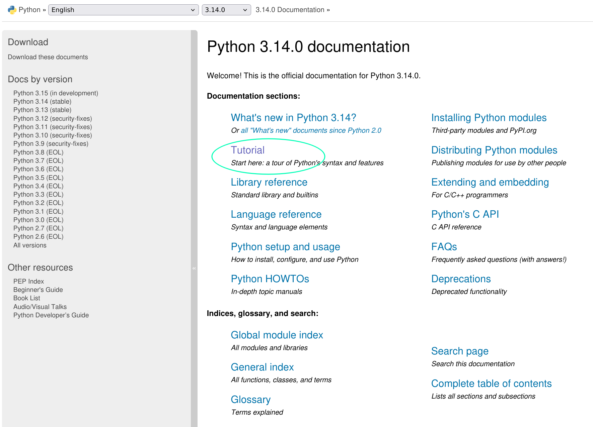

message = "Hello, World!"
print(message)Hello, World!2025-10-25 11:59:04
After completing this tutorial, you will be able to:
Google Colab (short for Colaboratory) is a free cloud service that lets you write and run Python code in your web browser. You don’t need to install anything on your computer - everything runs in the cloud. This makes it perfect for getting started with Python.
A Colab notebook consists of cells. There are two main types:
To run code in a cell:
The output will appear below the cell.
Your notebooks are automatically saved to your Google Drive in a folder called “Colab Notebooks”. You can also:
Your Colab notebooks are saved to Google Drive, so they count toward your Drive storage quota. We’ll discuss local alternatives later in this tutorial.
Let’s start by looking at some Python code. Don’t worry if you don’t understand it yet - that’s what we’re here to learn!
Let’s break down this code:
message = "Hello, World!" - This creates a variable named message and stores the text “Hello, World!” in itprint(message) - This tells Python to display the contents of the message variableThink of a variable like a labeled box where you can store information. The = sign means “store the value on the right into the variable on the left”.
Copy the following code into Google Colab and run it:
Now modify it:
"Hello, World!" to "Python is fun!" and run the code againmessage to greeting (remember to change it in both places!)print("My first Python program") and run the codeVariable names can contain letters, numbers, and underscores, but they must start with a letter or underscore. Use descriptive names that help you remember what the variable contains.
Before we dive deeper into Python, let’s learn how to find help when you’re stuck. This is one of the most important skills for working with Python!
Python has a built-in help() function that shows you information about functions and objects.
This will display documentation about the print function, including how to use it.
The dir() function shows you what methods and attributes are available for an object:
['__add__',
'__class__',
'__contains__',
'__delattr__',
'__dir__',
'__doc__',
'__eq__',
'__format__',
'__ge__',
'__getattribute__',
'__getitem__',
'__getnewargs__',
'__getstate__',
'__gt__',
'__hash__',
'__init__',
'__init_subclass__',
'__iter__',
'__le__',
'__len__',
'__lt__',
'__mod__',
'__mul__',
'__ne__',
'__new__',
'__reduce__',
'__reduce_ex__',
'__repr__',
'__rmod__',
'__rmul__',
'__setattr__',
'__sizeof__',
'__str__',
'__subclasshook__',
'capitalize',
'casefold',
'center',
'count',
'encode',
'endswith',
'expandtabs',
'find',
'format',
'format_map',
'index',
'isalnum',
'isalpha',
'isascii',
'isdecimal',
'isdigit',
'isidentifier',
'islower',
'isnumeric',
'isprintable',
'isspace',
'istitle',
'isupper',
'join',
'ljust',
'lower',
'lstrip',
'maketrans',
'partition',
'removeprefix',
'removesuffix',
'replace',
'rfind',
'rindex',
'rjust',
'rpartition',
'rsplit',
'rstrip',
'split',
'splitlines',
'startswith',
'strip',
'swapcase',
'title',
'translate',
'upper',
'zfill']This shows all the things you can do with a string. Methods that start with _ are internal - focus on the others like upper, lower, split, etc.
The official Python documentation is at https://docs.python.org. It’s comprehensive and well-organized.
For beginners, the Python Tutorial section is especially helpful: https://docs.python.org/3/tutorial/

When you have a question or encounter an error:
When searching for help, include the Python version you’re using. Google Colab typically uses Python 3, so add “python 3” to your searches.
In Google Colab, try the following:
help(len) - what does the len() function do?word = "Python", then run dir(word)upper or lower)word.upper() or word.lower()help(word.upper) to learn more about that methodPython works with different types of data. Let’s explore the most important ones for text and data analysis.
Strings are text data - anything you can type. They’re enclosed in quotes (either " or ').
Concatenation (joining strings):
Ada LovelaceGetting string length:
Strings have many built-in methods (functions that belong to strings):
Changing case:
['Python', 'is', 'great', 'for', 'text', 'analysis']F-strings let you insert variable values into strings easily:
Copy this code into Colab:
Modify the code to:
book_title to title case using .title() and print itauthor all uppercase and print it"The book {book_title} was written by {author}".split() on book_title to separate it into words and print the resultbook_titlePython works with two main types of numbers:
Integers (whole numbers):
Floats (decimal numbers):
15
5
50
2.0
3
1
100Sometimes you need to convert between strings and numbers:
50
I am 25 years oldYou cannot directly concatenate strings and numbers. You’ll get an error if you try "Age: " + 25. Convert the number to a string first: "Age: " + str(25), or use an f-string: f"Age: {25}".
Copy this code into Colab:
Modify the code to:
total_words by pages and print itadditional_pages = 3 and calculate the new total pages"The document has X pages" (use f-string)Booleans represent True or False values. They’re essential for making decisions in code.
These operators compare values and return True or False:
True
False
False
True
True
FalseUse == to compare values (equality test) and = to assign values to variables. This is a common source of confusion!
You can also compare strings:
Copy this code into Colab:
Modify the code to:
word_count is greater than minimum_required and print the resultword_count equals 150 and print the resultword_count is not equal to 200 and print the resultword_count to 75 and run the comparisons againData structures let you organize and store multiple pieces of information together.
Lists are ordered collections of items. They’re perfect for storing sequences of data.
Lists use zero-based indexing, just like strings:
Adding items:
['1984', 'Brave New World', 'Fahrenheit 451']['1984', 'Fahrenheit 451']Getting list length:
Lists are especially useful for working with text data:
['Python', 'is', 'great', 'for', 'text', 'analysis']
Number of words: 6
First word: Python
Last word: analysisCopy this code into Colab:
Modify the code to:
words list.append() to add the word “indeed” to the end of the list.remove() to remove the first occurrence of “to”Dictionaries store data as key-value pairs. They’re like a real dictionary where you look up a word (key) to find its definition (value).
Use keys to access values:
Getting all keys:
dict_keys(['title', 'author', 'year'])Dictionaries are useful for counting and organizing text data:
Copy this code into Colab:
Modify the code to:
Control flow lets you make decisions and repeat actions in your code.
If statements let your code make decisions based on conditions.
You have enough words!
Good job!Output (if word_count is 150):
You have enough words!
Good job!Notice the indentation (spaces at the start of lines). Python uses indentation to group code together. Everything indented under the if statement runs only if the condition is True.
Use elif (else-if) for multiple conditions:
Copy this code into Colab:
Modify the code to:
text is greater than 5. If it is, print “Long word”, otherwise print “Short word”text to different words and test your codeLoops let you repeat actions multiple times.
For loops iterate over sequences (lists, strings, etc.):
Looping over a list:
1
2
3
4
5
0
2
4
6
8
10Combining loops and if statements:
banana is a long word
cherry is a long wordWhile loops repeat as long as a condition is True:
Copy this code into Colab:
Modify the code to:
words.startswith("t"))range() to print the first 5 numbers (0-4)Functions are reusable blocks of code that perform specific tasks.
Let’s break down that code:
def greet(name): - This defines a function named greet that takes one parameter called namereturn message - This sends the result back to whoever called the functiongreet("Alice") - This calls (runs) the function with the argument "Alice"Think of functions like recipes: you define the recipe once, then you can follow it many times with different ingredients.
We’ve already been using Python’s built-in functions:
# len() - get length
text = "Python"
print(len(text)) # 6
# type() - check data type
print(type(42)) # <class 'int'>
print(type("hello")) # <class 'str'>
print(type([1, 2, 3])) # <class 'list'>
# print() - display output
print("Hello, World!")
# input() - get user input (works in Colab!)
name = input("What is your name? ")
print(f"Hello, {name}")Function without parameters:
Welcome, Ada Lovelace!Hello, Alice!
Hi, Bob!The sentence has 6 wordsCopy this code into Colab:
Modify the code to:
word.lower() insteadcase_type and use an if statement to return either uppercase or lowercase based on the parametercount_letter(text, letter) that counts how many times a specific letter appears in textWorking with files lets you read and write data stored on your computer (or in Colab’s temporary storage).
This is line 1
This is line 2
This is line 3
The "r" means “read mode”. Always close files when you’re done with file.close() to free up resources.
Better way: Using with statement (automatically closes the file):
This is line 1
This is line 2
This is line 3
Reading line by line:
This is line 1
This is line 2
This is line 3Reading all lines into a list:
Using "w" mode will overwrite the entire file if it exists. Use "a" (append mode) to add to the end of an existing file instead.
Appending to a file:
Writing multiple lines:
In Google Colab, you can:
Creating a sample file in Colab:
This is line 1
This is line 2
This is line 3
{'this': 3, 'is': 3, 'line': 3, '1': 1, '2': 1, '3': 1}Copy this code into Colab to create a sample file:
Now modify the code to:
So far, we’ve used Python’s built-in features. But Python’s real power comes from packages (also called libraries) - collections of pre-written code that add new capabilities.
Packages are like toolboxes. Each package contains functions and tools for specific tasks:
To use a package, you import it:
4.0Most common packages are already installed in Google Colab. If you need to install a package, use:
The ! tells Colab to run this as a shell command, not Python code.
In Colab, you usually don’t need to install packages. Just import them! We’ll discuss installing packages locally in the next section.
Let’s see a quick example using pandas to work with tabular data:
import pandas as pd
# Create a sample dataset
data = {
"book": ["1984", "Brave New World", "Fahrenheit 451"],
"author": ["George Orwell", "Aldous Huxley", "Ray Bradbury"],
"year": [1949, 1932, 1953],
"pages": [328, 311, 249]
}
# Create a DataFrame (pandas' table structure)
df = pd.DataFrame(data)
# Display the data
print(df) book author year pages
0 1984 George Orwell 1949 328
1 Brave New World Aldous Huxley 1932 311
2 Fahrenheit 451 Ray Bradbury 1953 2490 1984
1 Brave New World
2 Fahrenheit 451
Name: book, dtype: object
0 1949
1 1932
2 1953
Name: year, dtype: int64Filtering data:
book author year pages
0 1984 George Orwell 1949 328
2 Fahrenheit 451 Ray Bradbury 1953 249Basic statistics:
Average pages: 296.0
Earliest year: 1932Reading from a CSV file:
book author year pages
0 1984 George Orwell 1949 328
1 Brave New World Aldous Huxley 1932 311Pandas is incredibly powerful for data analysis. We’ll explore it more deeply when working with real datasets. For now, just know that it exists and can read CSV files easily!
Copy this code into Colab:
Modify the code to:
df["count"].max()df["count"].min()So far, we’ve been using Google Colab, which runs Python in the cloud. But you might want to run Python on your own computer. Let’s explore why and how.
Google Colab (Cloud):
Local Python (Your Computer):
For learning and quick experiments, Colab is perfect. For larger projects or when you need specific packages, local Python is better.
uv is a modern, fast Python package and project manager. We recommend it because it’s:
Lear more about uv here: https://docs.astral.sh/uv/
On macOS and Linux:
On Windows:
After installation, close and reopen your terminal.
Create a new Python project:
This creates a new directory with a basic Python project structure.
Install a package:
This installs pandas and adds it to your project’s dependencies.
Run Python:
This starts a Python interpreter with your project’s packages available.
Run a Python script:
Install a specific Python version:
uv automatically creates isolated environments for each project, so different projects can use different package versions without conflicts.
Conda is a more established tool that also manages Python environments and packages. It’s widely used in data science.
Download and install Miniconda (a minimal conda installation) from: https://docs.conda.io/en/latest/miniconda.html
Choose the installer for your operating system and follow the installation instructions.
Create a new environment:
This creates a new environment named “my-env” with Python 3.11.
Activate the environment:
Install packages:
Deactivate the environment:
List all environments:
Remove an environment:
Once you have Python installed locally (with either uv or conda), you can run Jupyter notebooks on your computer.
With uv:
With conda:
This opens Jupyter in your web browser, running locally on your computer.
Use uv when:
Use conda when:
Use Colab when:
Many people use multiple tools: Colab for quick experiments and learning, uv for new projects, and conda for data science work. You don’t have to choose just one!
This exercise requires setting up on your local computer (optional):
Install uv following the instructions for your operating system
Create a new project called “python-practice”
Add the pandas package to your project
Create a file called test.py with this code:
Run the file using uv run python test.py
Alternative exercise with conda:
Congratulations! You’ve completed this introduction to Python for text and data analysis.
You can now:
.lower(), .split(), .replace(), and string formattinghelp(), documentation, and online resourcesPractice regularly - The best way to learn programming is by doing. Try writing small programs to solve problems you encounter.
Work with real data - Apply these skills to actual text or datasets that interest you.
Learn more packages - Explore packages like:
Read other people’s code - Since you’re learning to read code, study examples from tutorials and open-source projects.
Debug and experiment - Don’t be afraid of errors! They’re a natural part of programming. See the optional debugging section for help.
Join communities - Consider joining Python forums, Reddit’s r/learnpython, or Stack Overflow to ask questions and learn from others.
Remember: everyone who programs started as a beginner. The key is persistence and practice. You’ve taken the first important steps, and you have all the foundational knowledge you need to continue learning.
Good luck with your Python journey!
This section is optional but important. Understanding errors will help you fix problems faster and become more independent in your learning.
Errors are not failures - they’re feedback! Python is telling you exactly what went wrong. Learning to read error messages is a crucial skill.
What it means: You wrote code that doesn’t follow Python’s grammar rules.
Error:
SyntaxError: unexpected EOF while parsingWhat went wrong: Missing closing parenthesis.
How to fix: Add the closing ):
Another example:
Error:
SyntaxError: invalid syntaxWhat went wrong: Missing colon after if statement.
How to fix:
What it means: You’re trying to use a variable or function that doesn’t exist.
--------------------------------------------------------------------------- NameError Traceback (most recent call last) Cell In[90], line 1 ----> 1 print(message) NameError: name 'message' is not defined
Error:
NameError: name 'message' is not definedWhat went wrong: The variable message was never created.
How to fix: Define the variable first:
Common cause: Typos in variable names
--------------------------------------------------------------------------- NameError Traceback (most recent call last) Cell In[92], line 2 1 my_name = "Alice" ----> 2 print(my_nane) # Typo: 'nane' instead of 'name' NameError: name 'my_nane' is not defined
What it means: You’re using a value in a way that doesn’t work with its type.
--------------------------------------------------------------------------- TypeError Traceback (most recent call last) Cell In[93], line 2 1 age = 25 ----> 2 message = "I am " + age TypeError: can only concatenate str (not "int") to str
Error:
TypeError: can only concatenate str (not "int") to strWhat went wrong: Can’t directly add a string and a number.
How to fix: Convert the number to a string:
Another example:
Pyt--------------------------------------------------------------------------- TypeError Traceback (most recent call last) Cell In[96], line 3 1 text = "Python" 2 print(text[0:3]) ----> 3 text[0] = "p" # Trying to change a character TypeError: 'str' object does not support item assignment
Error:
TypeError: 'str' object does not support item assignmentWhat went wrong: Strings are immutable (can’t be changed).
How to fix: Create a new string:
What it means: You’re trying to access a list/string position that doesn’t exist.
--------------------------------------------------------------------------- IndexError Traceback (most recent call last) Cell In[98], line 2 1 words = ["apple", "banana", "cherry"] ----> 2 print(words[5]) IndexError: list index out of range
Error:
IndexError: list index out of rangeWhat went wrong: The list only has indices 0, 1, 2 (three items), but we tried to access index 5.
How to fix: Use a valid index:
What it means: You’re trying to access a dictionary key that doesn’t exist.
--------------------------------------------------------------------------- KeyError Traceback (most recent call last) Cell In[100], line 2 1 book = {"title": "1984", "author": "George Orwell"} ----> 2 print(book["year"]) KeyError: 'year'
Error:
KeyError: 'year'What went wrong: The dictionary doesn’t have a “year” key.
How to fix: Use an existing key or check if the key exists first:
What it means: Your code indentation is inconsistent or incorrect.
Cell In[102], line 2 print("Hello") ^ IndentationError: expected an indented block after function definition on line 1
Error:
IndentationError: expected an indented blockWhat went wrong: The function body needs to be indented.
How to fix:
Another example (mixing tabs and spaces):
Cell In[104], line 3 print("Second line") # Too much indentation ^ IndentationError: unexpected indent
Error:
IndentationError: unexpected indentAlways use spaces for indentation in Python (4 spaces is the standard). Don’t mix tabs and spaces!
What it means: You passed a value of the right type but inappropriate value.
--------------------------------------------------------------------------- ValueError Traceback (most recent call last) Cell In[105], line 1 ----> 1 number = int("hello") ValueError: invalid literal for int() with base 10: 'hello'
Error:
ValueError: invalid literal for int() with base 10: 'hello'What went wrong: “hello” can’t be converted to an integer.
How to fix: Use a string that represents a number:
What it means: You’re trying to use a method or attribute that doesn’t exist for that type.
--------------------------------------------------------------------------- AttributeError Traceback (most recent call last) Cell In[107], line 2 1 number = 42 ----> 2 result = number.upper() AttributeError: 'int' object has no attribute 'upper'
Error:
AttributeError: 'int' object has no attribute 'upper'What went wrong: Numbers don’t have an .upper() method (only strings do).
How to fix: Use the correct type:
Python error messages have a standard format:
Traceback (most recent call last):
File "script.py", line 3, in <module>
print(message)
NameError: name 'message' is not definedReading from bottom to top:
NameError: name 'message' is not defined) - What went wrongline 3) - Where it happenedprint(message)) - The actual problematic lineAlways read error messages from the bottom up. The last line tells you what went wrong, and the lines above show you where.
Add print statements to see what’s happening:
Use type() to verify types:
Break your code into smaller pieces and test each part:
Handle errors gracefully:
Use help() to understand how functions work:
Copy the error message (without your specific variable names) and search online:
Each code snippet below has an error. Copy them into Colab one at a time and:
Code snippets:
Cell In[116], line 2 print("Hello World" ^ _IncompleteInputError: incomplete input
--------------------------------------------------------------------------- TypeError Traceback (most recent call last) Cell In[117], line 3 1 # Error 2 2 age = 25 ----> 3 message = "I am " + age + " years old" TypeError: can only concatenate str (not "int") to str
--------------------------------------------------------------------------- IndexError Traceback (most recent call last) Cell In[118], line 3 1 # Error 3 2 words = ["apple", "banana", "cherry"] ----> 3 print(words[3]) IndexError: list index out of range
Cell In[119], line 3 print("Hello") ^ IndentationError: expected an indented block after function definition on line 2
Cell In[120], line 3 if x > 5 ^ SyntaxError: expected ':'
--------------------------------------------------------------------------- KeyError Traceback (most recent call last) Cell In[121], line 3 1 # Error 6 2 book = {"title": "1984", "author": "Orwell"} ----> 3 print(book["year"]) KeyError: 'year'
End of Tutorial
You now have a comprehensive reference for Python basics, from running your first code to debugging errors. Return to this document whenever you need to refresh your knowledge!